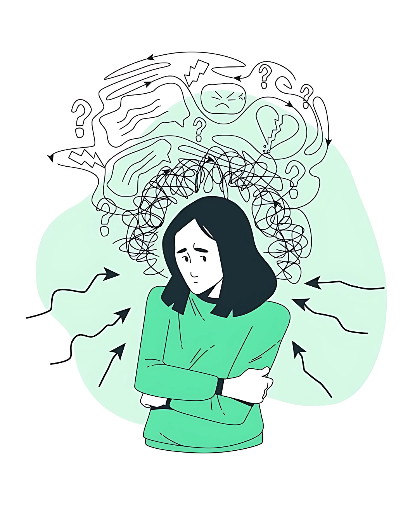
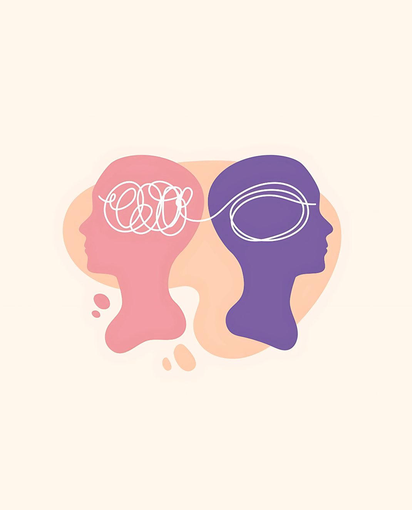
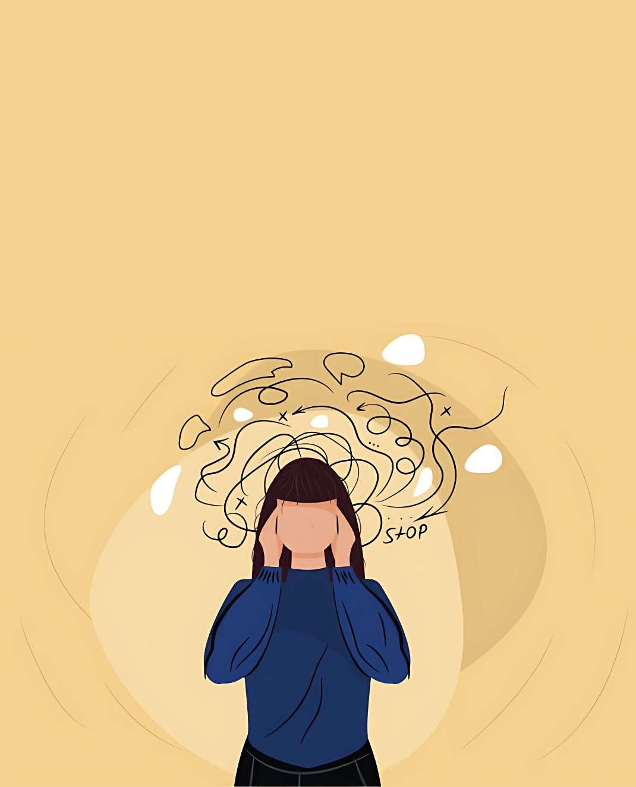
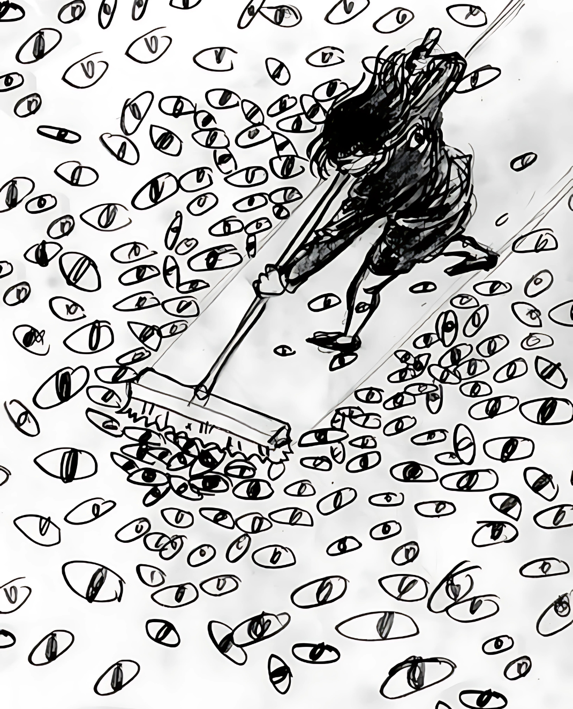
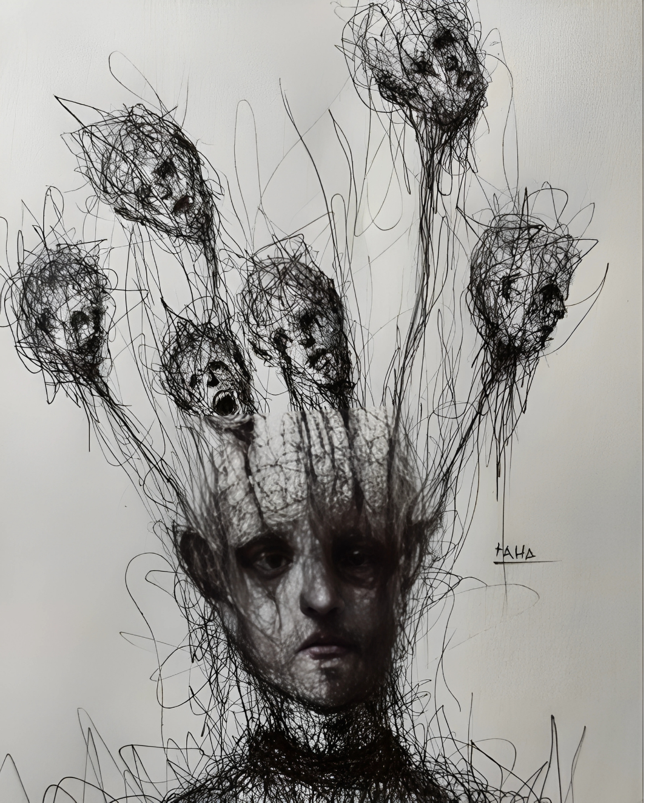
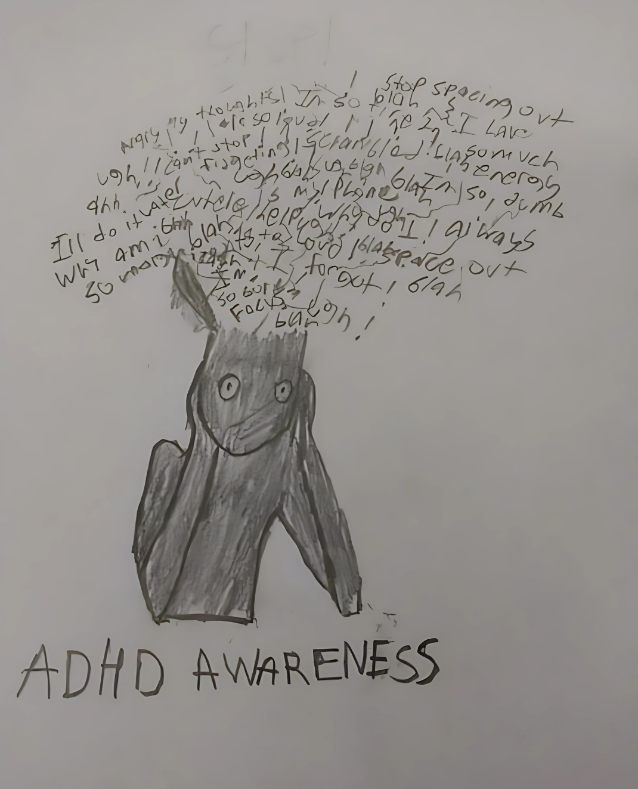
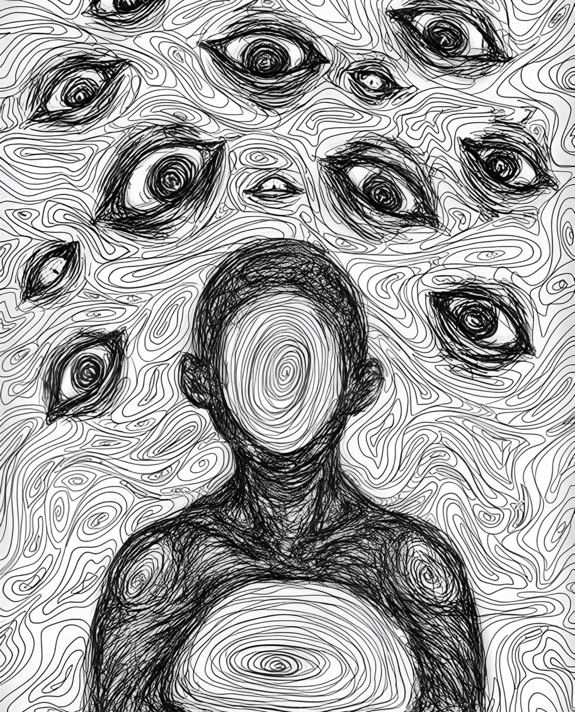
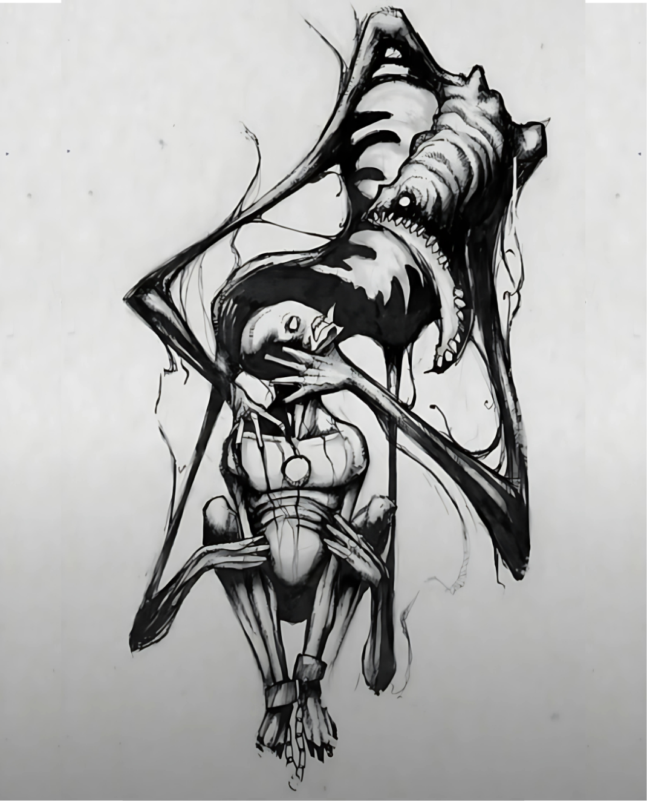

Despite the times we deny it, there are still some parts of the world that are not open to the thought of mental health issues. This close-mindedness leads to different treatment of people, which leads to their cognitive problems. So let's spread awareness to those people with information that will make them open their minds. As we always hear, "Awareness is better than cure."



Depression
Beyond the Blues
Obsessive-Compulsive Disorder (OCD)
Obsessive Thoughts, Compulsive Actions

Post-Traumatic Stress Disorder (PTSD)
More Than Just a Memory

Attention Deficit Hyperactivity Disorder (ADHD)
The Minds' Race

Anxiety
Constant Criticism

Schizophrenia
A Distorted Reality
